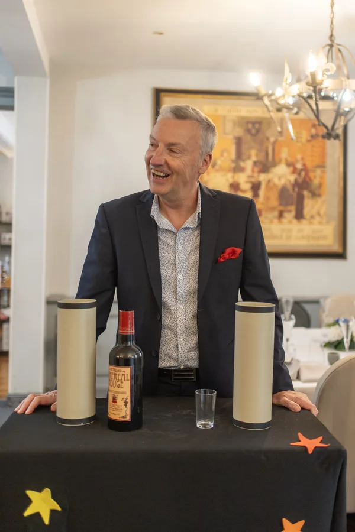
A Francis DarcyL'as dans votre manche
Depuis plus de 25 ans, Francis Darcy fait voyager petits et grands au cœur de l'illusion. Artiste de scène et de proximité, il s'adapte à chaque public : comités d'entreprise, collectivités, mariages, anniversaires, séminaires, écoles, EHPAD ou fêtes de village.
Basé à Issoudun, dans l'Indre, il intervient dans le Cher et tout le Centre-Val de Loire. Sa marque de fabrique ? Une magie d'élégance, de bonne humeur et de complicité avec le public. Que ce soit autour d'une table, sur scène ou au milieu d'une fête, il crée cette atmosphère unique où le rire se mêle à l'émerveillement.
Découvrir les prestationsCinq cartes, cinq univers
Touchez une carte pour la retourner et découvrir chaque prestation.
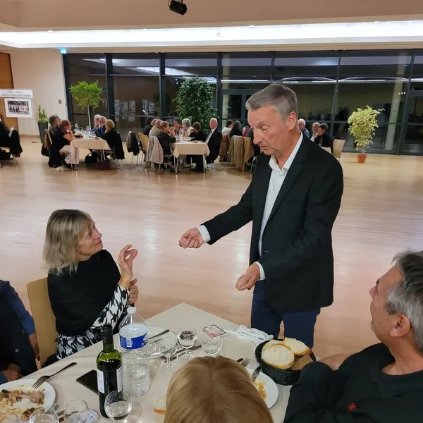
Close-up & proximité
Close-up
De table en table, au creux de la main de vos invités : cartes, pièces et objets prennent vie pendant vos cocktails, mariages et soirées d'entreprise.
En savoir plusMe contacter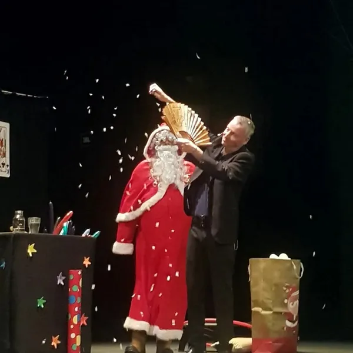
Spectacles enfants
Spectacles enfants
Arbres de Noël, anniversaires, écoles et centres de loisirs : un spectacle interactif où les enfants deviennent les héros de la magie.
En savoir plusMe contacter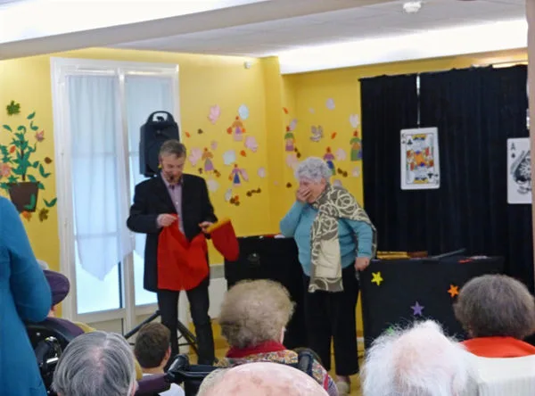
Magie pour les aînés
Magie pour les aînés
EHPAD, maisons de retraite et clubs seniors : un moment de douceur, de souvenirs et d'émerveillement, adapté à chaque public.
En savoir plusMe contacter
Sculpture sur ballons
Sculpture sur ballons
Animaux, fleurs, personnages : des créations en ballons qui enchantent les animations, fêtes de village, …
En savoir plusMe contacter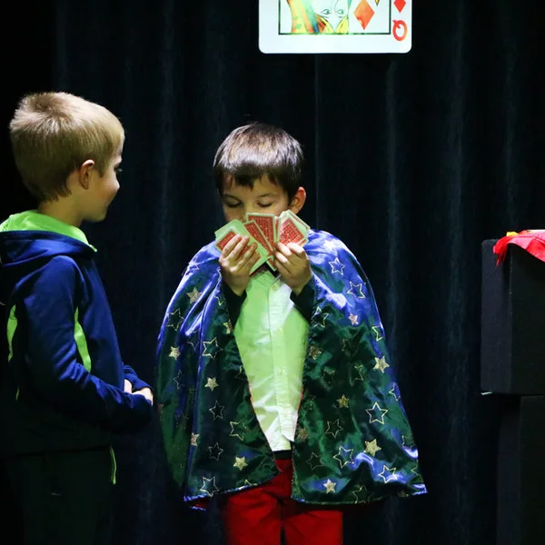
Ateliers de magie
Ateliers de magie
Des ateliers pour initier nos magiciens en herbe, avec des tours facilement réalisables — de quoi étonner la famille et les amis ! Tours adaptés à l'âge des participants ; mise en place facile dans toutes les structures accueillant des enfants.
En savoir plusMe contacterÉvénements
Public, privé ou entreprise : Francis distribue la magie partout.
Publics
Spectacles ouverts à tous
Festivals, fêtes de village, marchés de Noël, médiathèques… Francis apporte la magie au cœur des événements publics.
- Spectacle de 1h
- Adapté à tous les âges
- Sculpture de ballons
- Close up
Privés
Votre soirée, votre magie
Mariages, anniversaires, fêtes de famille… Chaque moment est unique, chaque spectacle est sur-mesure.
- Close-up pendant le cocktail
- Spectacle pour le dîner
- Formule combinée disponible
- Formule personnalisée
Entreprise
La magie au service du business
Séminaires, team building, soirées clients, lancements de produits. La magie renforce vos messages.
- Animation de stand salon
- Ice-breaker séminaire
- Soirée de gala complète
La magie en images
Quelques instants capturés en prestation.
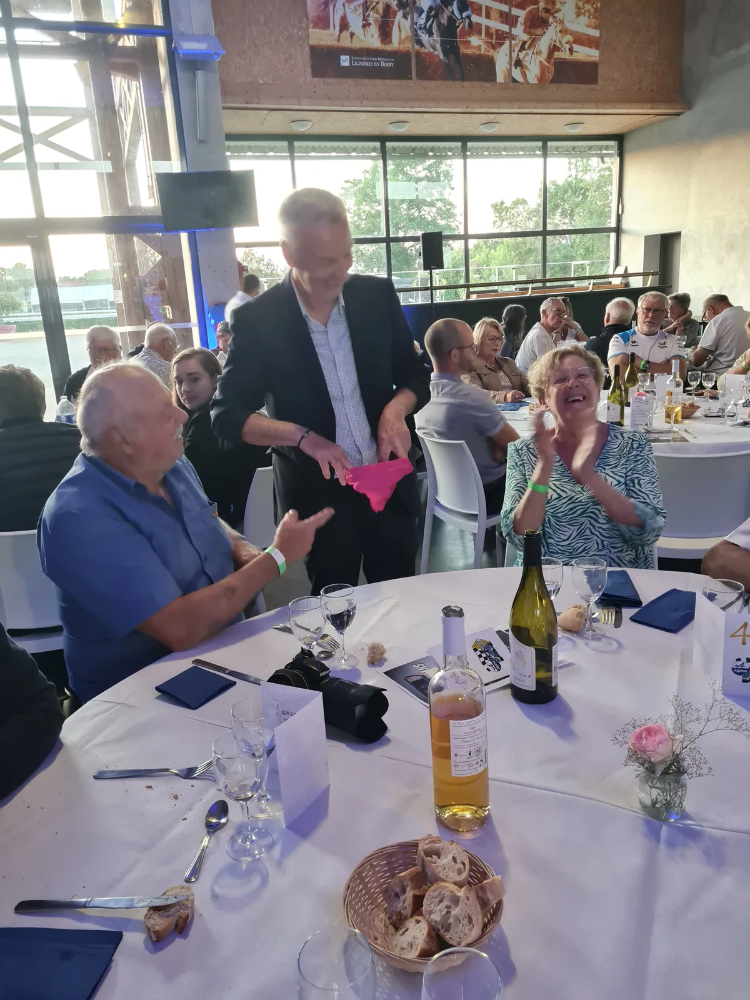
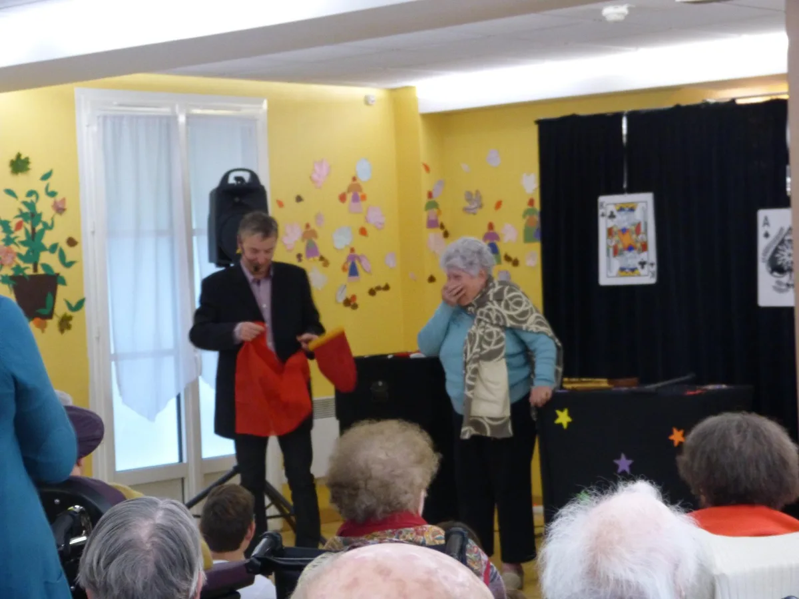
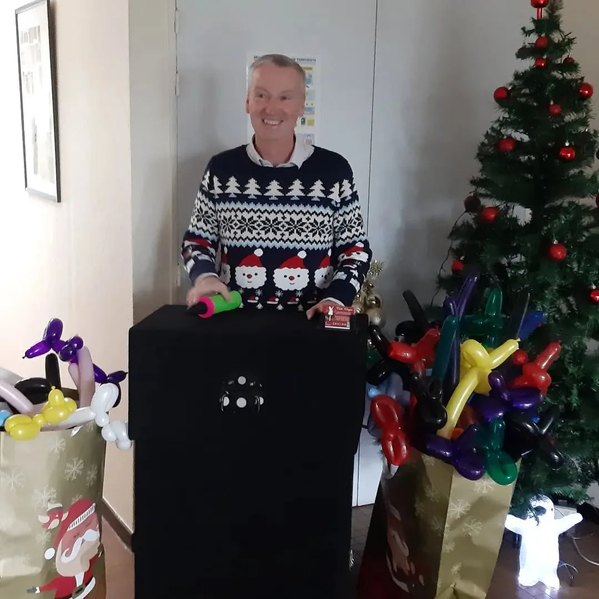
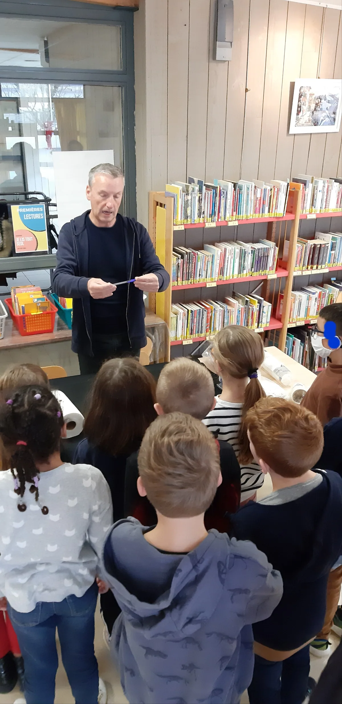
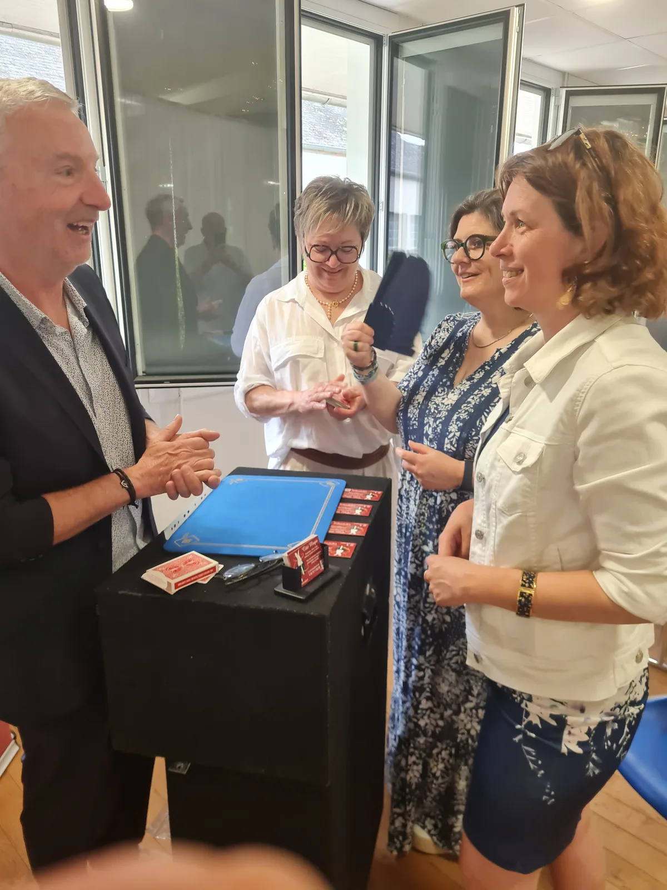
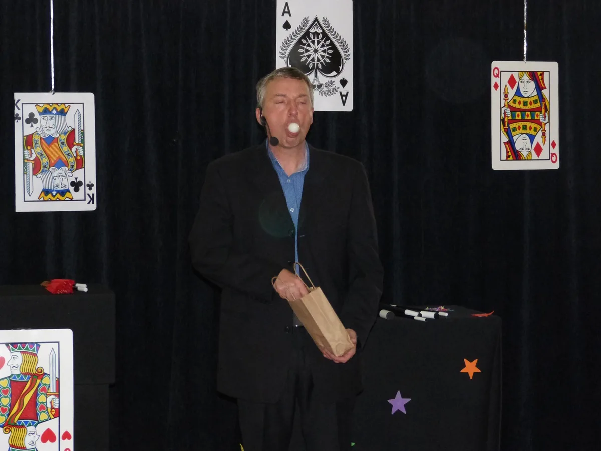
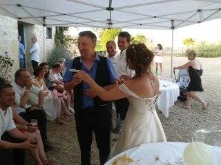
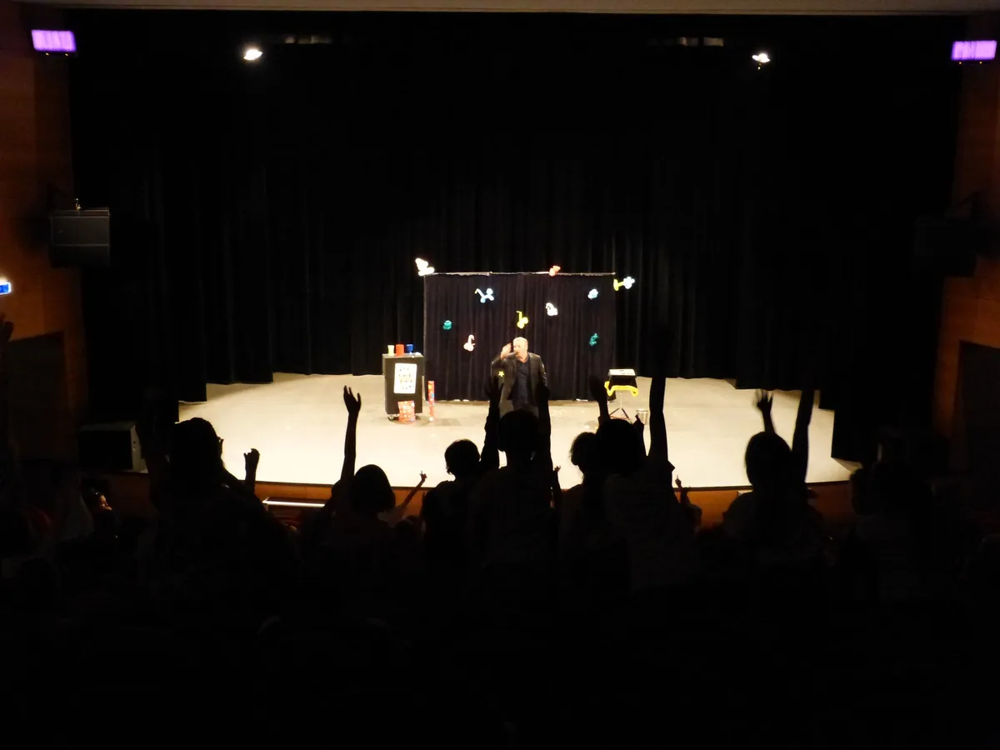
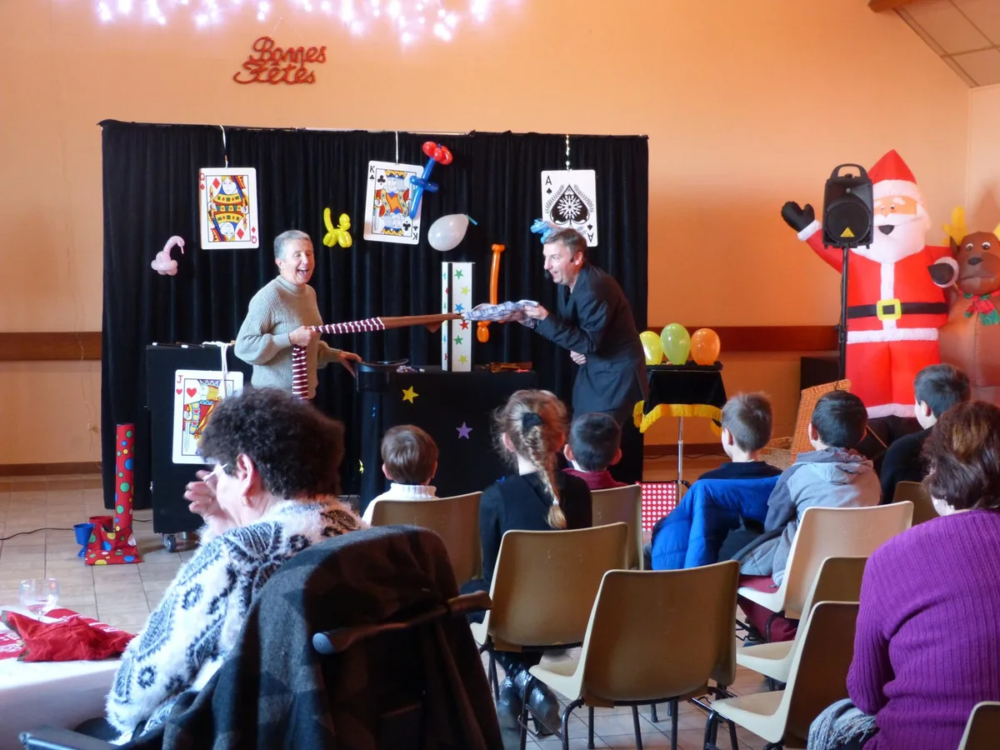
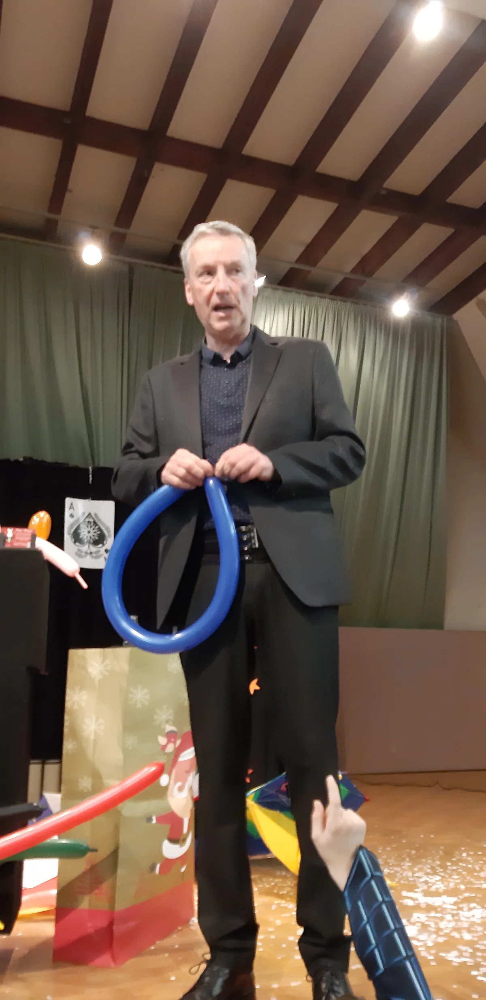
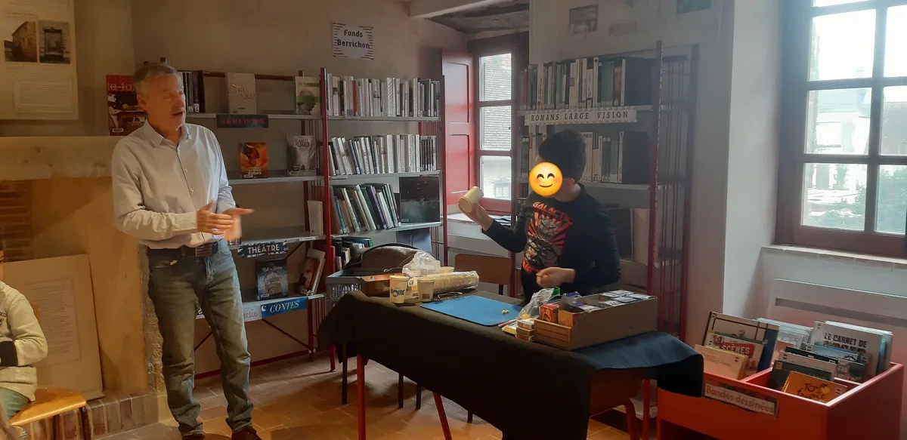
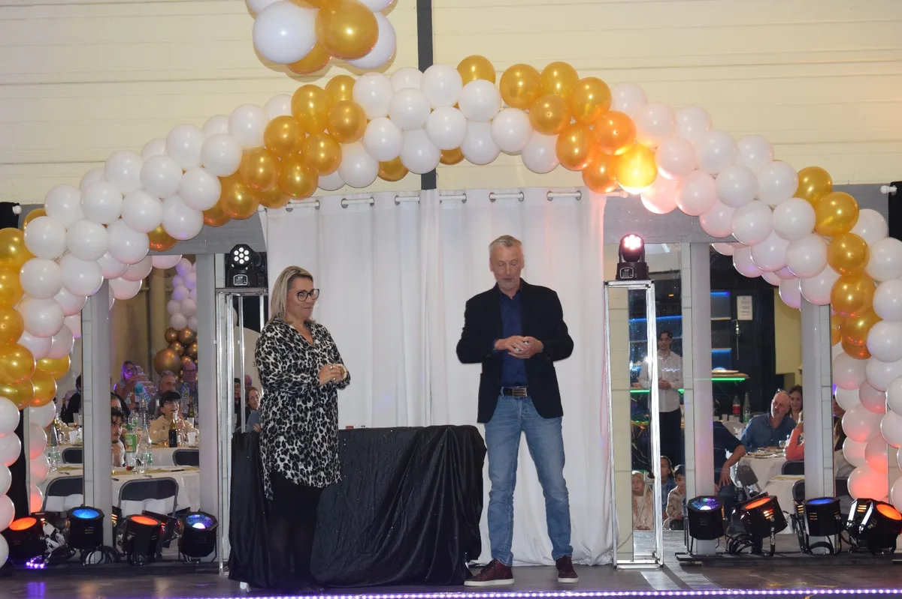
Ils ont fait confiance à Côté Magie
Entreprises, collectivités et associations du Centre-Val de Loire et d'ailleurs.
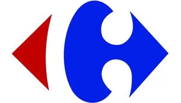
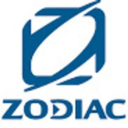
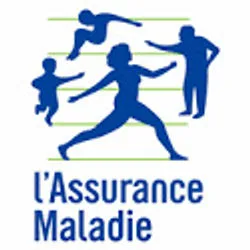
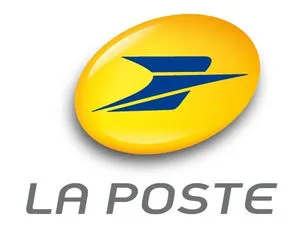
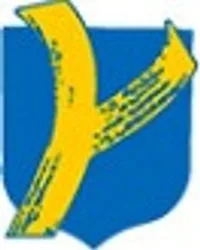
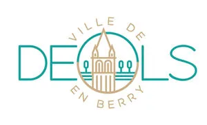
Francis Darcy a animé des événements pour Safran, la RATP, Carrefour, La Poste, la CPAM, Zodiac Aerospace, E.Leclerc, Kiabi, la Ville d'Issoudun et la Ville de Déols, parmi d'autres entreprises et collectivités.
Ils en parlent encore
Des avis 5 étoiles laissés sur Google par ceux qui ont vécu la magie.
Demandez votre devis
Parlez-nous de votre événement : Francis vous répond personnellement.
Adresse
3 rue Serge Cligman
36100 Issoudun
Téléphone
Déplacements
Indre, Cher & Centre-Val de Loire
Carte Google Maps
L'affichage de la carte charge un contenu Google, susceptible de déposer des traceurs.